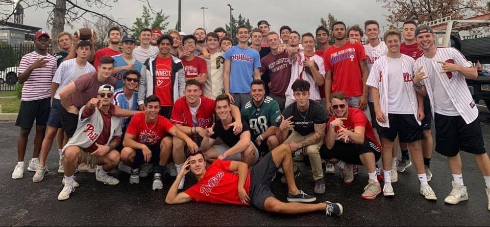

Thank you for visiting my portfolio,
My name is Tyler Scherzer, I graduated Cum Laude from West Chester University recieving my B.S in Computer Science in Decmber of 2021. I started my studies at Montgomery County Community College, where I received an A.A.S in Information Technology prior to transfering to my alma mater. I embarked on my professional journey armed with a Bachelor's degree in Computer Science, eagerly embracing the challenges of the IT consulting world at Ferrilli, a higher education IT consulting firm. In this dynamic environment, I played a pivotal role as an Information Technology Consultant, navigating complex technological landscapes and gaining invaluable insights into the intricacies of the industry. After a year of growth and learning, I was presented with a compelling opportunity to join Vanguard as an Application Engineer I. This transition marked a significant milestone, allowing me to not only deepen my technical acumen but also contribute to innovative projects at one of the industry's leading organizations.
Since my transition to Vanguard almost a year ago, I have thrived in the role of an Application Engineer, navigating the forefront of technological innovation. In this esteemed position, I continually engage with cutting-edge solutions, translating my passion for technology into tangible contributions. Notably, during my tenure at Vanguard, I achieved the AWS Cloud Practitioner badge, a testament to my commitment to staying at the forefront of cloud technologies. Working within the dynamic ecosystem of Vanguard has not only deepened my technical prowess but has also empowered me to play a pivotal role in shaping the future of application engineering. Each day presents a new canvas for me to weave the threads of my expertise and creativity, aligning seamlessly with Vanguard's unwavering commitment to excellence.
During my tenure at West Chester University, I was privileged to be bestowed with the esteemed membership of Sigma Phi Epsilon fraternity. Within the fraternity's fold, I immersed myself in the profound principles of virtue, diligence, and brotherly love, values that would become integral to my personal and professional development. In a defining moment during the Spring Semester of 2019, I was humbled to be entrusted with the role of Vice President of Philanthropy, a position that allowed me to translate these core values into meaningful action. Serving in this capacity enabled me to extend a helping hand to the local community, orchestrating initiatives to raise funds for charitable organizations and support local small businesses. This experience became a crucible for learning the nuances of networking, organizational intricacies, and the delicate art of customer relations – skills that have proven invaluable in my seamless transition from the academic realm to the corporate landscape.
As I reflect on my journey, from the hallowed halls of West Chester University to my current endeavors in the corporate world, the fusion of academic pursuits and extracurricular engagements has indelibly shaped my narrative. The values instilled by Sigma Phi Epsilon continue to resonate, infusing my professional pursuits with a commitment to excellence, community engagement, and the cultivation of genuine connections. With a profound sense of gratitude for the diverse experiences that have sculpted my path, I eagerly anticipate the unwritten chapters that lie ahead, driven by an enduring passion for growth, innovation, and contributing meaningfully to both professional and community landscapes.